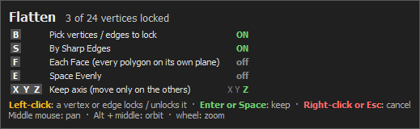

Tools / Flatten
Flatten
Make selected vertices, edges or polygons flat.
What it does
Flatten makes the selected vertices, edges or polygons flat. The flattening is applied at once and stays a preview while you use the options. It lives in the Align pie.
Click vertices to lock them, toggle options with keys, and watch the selection flatten.
How to use it
- Select vertices, edges or polygons of an Editable Poly or Edit Poly.
- Press Ctrl+Shift+D for the Align pie and choose Flatten (top-left).
- Use the keys below to lock vertices or change how it flattens.
- Enter or Space keeps it. Right-click or Esc cancels.

Options
| Key | Option | What it does |
|---|---|---|
| B | Pick vertices / edges to lock | Click a vertex or an edge to lock or unlock it. Locked vertices stay put; the rest flattens around them. |
| S | By Sharp Edges | Each group of polygons between hard edges gets its own plane. |
| F | Each Face | Every polygon goes flat on its own plane while the overall shape is kept. |
| E | Space Evenly | Spreads the vertices of a row at equal distances. |
| XYZ | Keep axis | Moves vertices only on the other axes. |
The viewport can still be moved while the tool runs: middle mouse pans, Alt+middle orbits, the wheel zooms.
Good to know
- Locked vertices are drawn green and the one under the mouse yellow while you pick.
- It also works on a row of UV edges in the Unwrap UVW editor, and on spline knots (a row of knots goes straight between its ends).
- Undo is one step.